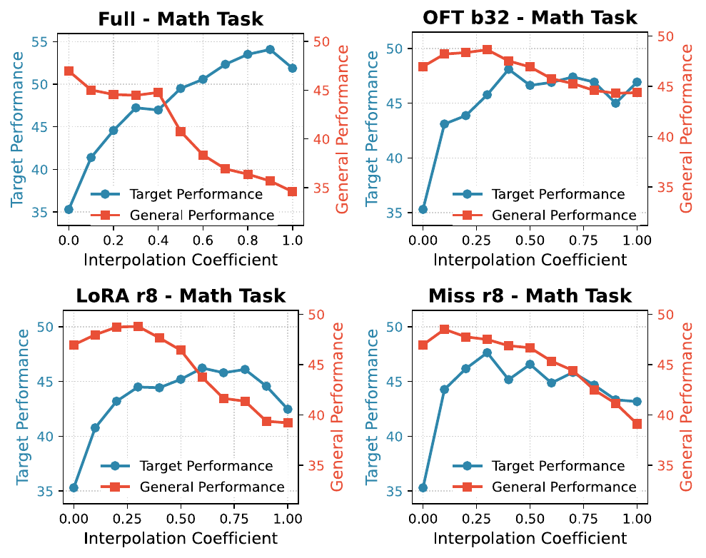

PEFT evaluation should ask not only what improves, but also what is forgotten and why.
Parameter-efficient finetuning is usually sold as an affordable way to adapt large language models. PEFT-Arena asks a less comfortable question: when a PEFT method improves the target task, what pretrained capabilities does it trade away? We benchmark this target-retention trade-off, then diagnose it through weight-space geometry, activation-space geometry, and interpolation paths.
- Target-only evaluation is not comprehensive. Full finetuning can deliver strong target gains while erasing general capabilities.
- PEFT methods form different stability-plasticity frontiers. OFT often gives a better retention-adaptation balance than additive low-rank methods at comparable budgets.
- Forgetting is tied to geometry distortion. Weight-space profiles show where updates act; activation-space metrics show whether general representations remain structurally stable.
- Interpolation diagnoses overshoot. SFT checkpoints often move beyond the best target-retention point, and interpolation should follow the geometry of each PEFT parameterization.
Why target accuracy is not enough
PEFT is usually evaluated by a downstream score: did math accuracy improve, did medical QA improve, did reward optimization help? But this hides the other half of adaptation. A model can become better on the target distribution while becoming worse at following instructions, recalling factual knowledge, or solving general reasoning tasks.
This is the stability-plasticity dilemma. Plasticity asks how much the model learns from the new domain. Stability asks how much pretrained capability survives the update. PEFT-Arena treats both as first-class evaluation axes.
A PEFT method is not strong if it only learns the target task by spending pretrained capabilities.
The benchmark: read the table horizontally
PEFT-Arena evaluates Qwen2.5-7B and Llama3.2-3B-Instruct under supervised finetuning and RLVR with GRPO. We adapt to mathematical and medical reasoning, then evaluate retained general ability on IFEval, NQ, and BBH. Each cell below reports Target / General average accuracy.
| Train | Method | Setting | Qwen Math | Qwen Med | Llama Math | Llama Med |
|---|---|---|---|---|---|---|
| Supervised finetuning (SFT) | ||||||
| SFT | Base | -- | 35.30 / 46.97 | 46.36 / 46.97 | 27.80 / 53.03 | 41.44 / 53.03 |
| SFT | Full FT | -- | 50.63 / 34.22 | 53.63 / 34.41 | 33.90 / 39.83 | 44.26 / 26.03 |
| SFT | OFT | block 32 | 46.93 / 44.37 | 48.63 / 42.40 | 30.60 / 40.73 | 39.50 / 40.50 |
| SFT | LoRA | r8a16 | 42.47 / 39.22 | 47.91 / 36.06 | 24.07 / 36.57 | 38.34 / 27.99 |
| SFT | PiSSA | r8a16 | 44.53 / 24.78 | 26.16 / 18.05 | 0.67 / 9.74 | 21.17 / 12.92 |
| SFT | KeepLoRA | r8 | 40.53 / 43.75 | 45.60 / 47.09 | 15.20 / 40.74 | 41.26 / 39.52 |
| SFT | VeRA | r256 | 39.43 / 47.25 | 28.50 / 47.01 | 28.80 / 46.79 | 40.68 / 48.94 |
| RLVR with GRPO | ||||||
| RLVR | Full FT | -- | 47.57 / 48.68 | 46.24 / 43.22 | 29.80 / 52.20 | 45.88 / 51.81 |
| RLVR | OFT | block 32 | 47.90 / 48.90 | 46.79 / 47.24 | 29.97 / 50.04 | 44.99 / 52.31 |
| RLVR | LoRA | r8a16 | 46.93 / 48.27 | 47.08 / 42.80 | 28.83 / 52.17 | 44.97 / 53.53 |
The table should be read horizontally. Full FT often maximizes the target column, but it spends a large amount of general capability to get there. PiSSA is a more extreme failure mode: it can improve or even destabilize target performance while severely damaging general retention. OFT does not always maximize target accuracy, but it often preserves substantially more general ability for comparable target gains. RLVR behaves differently from SFT: at the evaluated horizon, it obtains target gains with much weaker general erosion.
| Observation | Example | Evidence |
|---|---|---|
| Target gains can spend general ability. | Qwen SFT math Full FT | Target rises 35.30 -> 50.63, while General falls 46.97 -> 34.22. |
| OFT is a stronger SFT frontier point. | Qwen SFT math OFT-b32 | Target reaches 46.93 with only -2.60 General drop, compared with LoRA-r8's -7.75 drop. |
| RLVR is less forgetting-prone at this horizon. | Qwen RLVR math OFT-b32 | Target rises to 47.90 and General also improves to 48.90. |
Hu et al. LoRA: Low-Rank Adaptation of Large Language Models. ICLR 2022.
Zhang et al. AdaLoRA: Adaptive Budget Allocation for Parameter-Efficient Fine-Tuning. ICLR 2023.
Liu et al. DoRA: Weight-Decomposed Low-Rank Adaptation. arXiv 2024.
Kopiczko et al. VeRA: Vector-Based Random Matrix Adaptation. ICLR 2024.
Meng et al. PiSSA: Principal Singular Values and Singular Vectors Adaptation. NeurIPS 2024.
Wang et al. MiLoRA: Harnessing Minor Singular Components for PEFT. NAACL 2025.
Kang and Yin. MiSS: Revisiting the Trade-off in LoRA. ICLR 2026.
Luo et al. KeepLoRA: Continual Learning with Residual Gradient Adaptation. arXiv 2026. Orthogonal finetuning
Qiu et al. Controlling Text-to-Image Diffusion by Orthogonal Finetuning. NeurIPS 2023.
Liu et al. Parameter-Efficient Orthogonal Finetuning via Butterfly Factorization. ICLR 2024.
Qiu et al. Orthogonal Finetuning Made Scalable. EMNLP 2025. Activation scaling
Liu et al. Few-Shot Parameter-Efficient Fine-Tuning is Better and Cheaper than In-Context Learning. NeurIPS 2022.
From scores to mechanisms
The benchmark tells us what happens, but not why. Two PEFT methods can have similar target gains and very different forgetting. To explain this, PEFT-Arena looks inside the model from two complementary views: weight-space geometry and activation-space geometry.
Weight-space geometry: where does the update act?
In weight space, we decompose each pretrained weight matrix into its singular directions. This gives us a coordinate system for asking where the finetuned update acts.
We use two profiles. The retention profile measures how much the finetuned weight deviates along the pretrained singular structure. The adaptation profile measures where update energy is injected across pretrained directions. These profiles are descriptive: they show the inductive bias of a PEFT parameterization rather than serving as a complete theory of forgetting.

Full FT and PiSSA visibly disrupt the retention profile. LoRA, MiSS, PiSSA, and AdaLoRA often allocate update energy in spiky directions. PiSSA is especially unstable: it updates principal components strongly, but it also remains spiky across the rest of the spectrum. OFT is more structured because it updates through an orthogonal parameterization, which tends to preserve pretrained spectral geometry better.
Weight-space geometry tells us where a PEFT update acts, but not whether those directions matter for a capability distribution.
Capability-conditioned drift: does the data use those directions?
A large weight update is not automatically harmful. It matters whether general examples actually activate the changed directions. Capability-conditioned drift measures the effect of the update on pretrained activations from a dataset. We compute it separately for general data and target-domain data.
h0,x,t is the base-model activation for token t in example x. The metric asks how strongly an update perturbs activations drawn from a capability distribution.
General CSD is associated with forgetting, while target CSD is not a clean monotonic predictor of target gain. This suggests that retention is more directly tied to perturbing general-distribution activations, whereas target adaptation depends on whether the change is task-aligned.
| Metric | External quantity | Pearson | Spearman |
|---|---|---|---|
| CSDG,rel | Forgetting | 0.347 | 0.317 |
| CSDG,un | Forgetting | 0.481 | 0.603 |
| CSDT,rel | Target gain | -0.164 | 0.107 |
| Family | CSDG,rel | CSDT,rel | Ratio | Forget |
|---|---|---|---|---|
| Full FT | 1.16e-3 | 1.06e-3 | 1.077 | 17.31 |
| LoRA | 1.21e-3 | 1.21e-3 | 1.042 | 15.70 |
| OFT | 7.82e-3 | 7.64e-3 | 1.018 | 11.20 |
| PiSSA | 8.94e-2 | 8.37e-2 | 1.102 | 34.56 |
| MiLoRA | 7.17e-4 | 6.46e-4 | 1.288 | 16.35 |
Activation-space geometry: did the representation structure survive?
Weight-space diagnostics still miss an important distinction: movement is not the same as damage. A representation can move through a nearly shared rotation while preserving distances, angles, and pairwise relationships. This is why raw activation drift can be misleading, especially for OFT.4
Representation drift and forgettingRamasesh et al. Anatomy of Catastrophic Forgetting: Hidden Representations and Task Semantics. ICLR 2021.
Davari et al. Probing Representation Forgetting in Supervised and Unsupervised Continual Learning. CVPR 2022.
Caccia et al. New Insights on Reducing Abrupt Representation Change in Online Continual Learning. ICLR 2022.
We therefore compare base-model and finetuned-model activations on the same general examples. The main question is whether the relational geometry among examples survives finetuning.
Remove the best global rotation, then measure leftover distortion. dproc = minRTR=I ||X1R - X0||F / (||X0||F + ε)
Compare pairwise cosine similarity structure among examples. dgram = ||Z1Z1T - Z0Z0T||F / (||Z0Z0T||F + ε)
Use a standard representation similarity diagnostic as a sanity check. CKA(X0, X1) = ||X0TX1||F2 / (||X0TX0||F ||X1TX1||F)
Ding et al. Grounding Representation Similarity Through Statistical Testing. NeurIPS 2021. Representation similarity
Kornblith et al. Similarity of Neural Network Representations Revisited. ICML 2019.
Raghu et al. SVCCA: Singular Vector Canonical Correlation Analysis for Deep Learning Dynamics and Interpretability. NeurIPS 2017.
Morcos et al. Insights on Representational Similarity in Neural Networks with Canonical Correlation. NeurIPS 2018.
Procrustes residual and Gram distortion correlate with forgetting; CKA moves in the opposite direction and tracks retained general score. OFT can still move representations, but much of this movement is more rotation-like and less destructive. PiSSA shows strong non-isometric distortion, matching its severe forgetting.
| Metric | External quantity | Pearson | Spearman |
|---|---|---|---|
| Procrustes residual | Forgetting | 0.711 | 0.568 |
| Gram distortion | Forgetting | 0.485 | 0.361 |
| CKA | Forgetting | -0.761 | -0.711 |
| Method | Proc. ↓ | Gram ↓ | CKA ↑ | Forget ↓ |
|---|---|---|---|---|
| Full FT | 0.1640 | 0.2500 | 0.8654 | 17.31 |
| LoRA | 0.1808 | 0.2430 | 0.8564 | 15.97 |
| OFT | 0.1279 | 0.1906 | 0.9340 | 7.81 |
| MiLoRA | 0.1635 | 0.2476 | 0.8651 | 16.35 |
| PiSSA | 0.4376 | 0.8655 | 0.4402 | 34.56 |
The retention-side signal is not “how far activations move,” but whether their geometry is distorted beyond a benign rotation.
Interpolation: where along the path is stability lost?
A final checkpoint is only one point along the adaptation path. Interpolation asks whether the model moved farther than needed for its target gain. In SFT, intermediate points often recover general ability while preserving much of the target improvement. This reveals an overshoot region: the final checkpoint is not always the best target-retention operating point.

Across SFT runs, the rewinding path for Full FT and PEFT methods shows a common pattern: general ability recovers first, while target performance drops only later. This creates practical operating points that retain most of the target gain with substantially less general-capability damage. It also raises a pathwise question: is rewinding simply reversing the training trajectory, or does it trace a different route through the target-general plane? Comparing training checkpoints with interpolation points shows that the two paths are not the same. We call this an overshoot phenomenon because the final SFT checkpoint often moves past a better target-retention trade-off point, and interpolation reveals that the extra movement mainly hurts stability before it meaningfully helps plasticity.

The interpolation path must respect the PEFT parameterization. For additive methods such as Full FT, LoRA, and PiSSA, the natural path scales the effective update ΔW. For OFT, the update is represented by a skew-symmetric generator and a Cayley transform, so interpolation should scale the generator and stay on the orthogonal path. The difference is not only geometric: in the table below, the parameterization-aware path recovers much more general ability at a similar interpolation strength than dense-weight interpolation.
| Path | Alpha | Math | General |
|---|---|---|---|
| Dense delta interpolation | 0.3 | 43.93 | 43.91 |
| Cayley-generator interpolation | 0.3 | 45.77 | 48.64 |
| Final OFT checkpoint | 1.0 | 46.93 | 44.37 |
Layer-wise OFT rewinding is a post-hoc case study. OFT update strengths are not balanced across depth; later layers can receive much stronger rotations than early layers. SafeScale and MinScale rescale layer generators to reduce this imbalance and can recover general ability while preserving much of the target gain.
| Variant | Math | Medical |
|---|---|---|
| Final OFT | 46.93 / 44.37 | 48.63 / 42.40 |
| Uniform scale 0.4 | 48.10 / 47.53 | 48.83 / 48.15 |
| Layer-wise SafeScale | 47.17 / 46.69 | 50.01 / 47.61 |
| Layer-wise MinScale | 47.83 / 46.86 | 49.76 / 47.79 |
What we learn
- PEFT methods should be compared by target-retention trade-offs, not target score alone.
- OFT often gives a strong frontier because its parameterization better preserves geometry.
- PiSSA is a useful warning case: principal-component updates can severely disrupt general capabilities.
- Activation geometry clarifies why raw movement is not equivalent to forgetting.
- Interpolation turns final-checkpoint evaluation into a pathwise diagnosis.
Code and resources
The release includes training and evaluation entrypoints, benchmark result tables, weight-space spectral analysis, CSD diagnostics, activation-geometry scripts, and interpolation / rewinding utilities.

Repository contents.
- Training and evaluation entrypoints for SFT and RLVR.
- Benchmark result tables for target domains and general retention.
- Weight-space geometry analysis scripts.
- Activation-geometry and CSD diagnostics.
- Interpolation and post-hoc rewinding utilities.
bash setup_env.sh
python run.py train sft ...
python run.py train rl ...
python run.py eval ...
python run.py merge ...Authors
Citation
@article{huang2026peftarena,
title={PEFT-Arena: Understanding Parameter-Efficient Finetuning from a Stability-Plasticity Perspective},
author={Huang, Yangyi and Peng, Ruotian and Qiu, Zeju and Kang, Jiale and Wen, Yandong and Sch\"olkopf, Bernhard and Liu, Weiyang},
journal={arXiv preprint arXiv:2605.28819},
year={2026}}